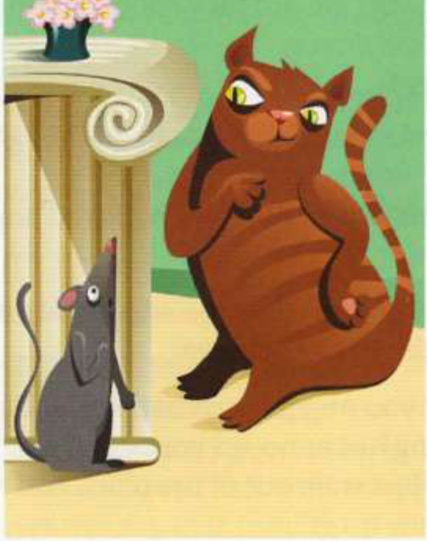
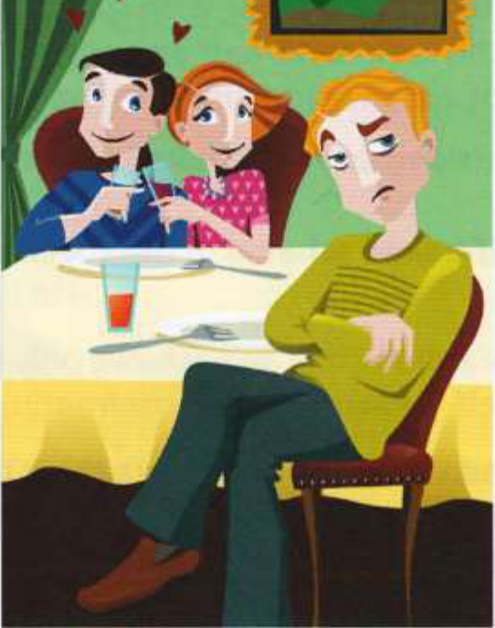
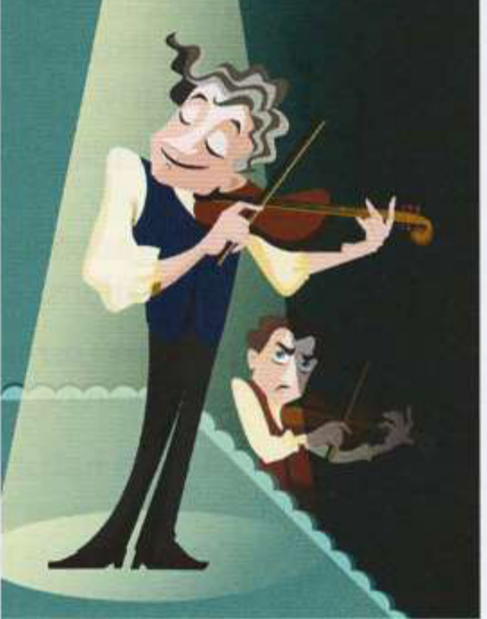

Những bức tranh này làm bạn liên tưởng đến thành ngữ nào?
1

2

3

48.2
Thay thế phần gạch chân trong mỗi câu bằng một thành ngữ.
1We want the directors to agree to our proposals, so we need to discuss our strategy. (Chúng tôi muốn ban giám đốc đồng ý với các đề xuất của mình, vì vậy chúng tôi cần thảo luận về chiến lược của chúng tôi.)
2OK, kids - that's enough. I know where you've been hiding my glasses! (Được rồi các con - thế là đủ rồi. Ta biết các con đã giấu kính của ta ở đâu rồi đấy!)
3Martha has decided to apply to be the shop manager. She's been an assistant manager for five years and is tired of not being fully in charge. (Martha đã quyết định ứng tuyển vào vị trí quản lý cửa hàng. Cô ấy đã làm trợ lý quản lý được năm năm và mệt mỏi với việc không được toàn quyền quyết định.)
4When you're looking for a new flat, location is the most important thing to consider. (Khi bạn đang tìm kiếm một căn hộ mới, vị trí là điều quan trọng nhất cần cân nhắc.)
5I went to the cinema with Elena and her new boyfriend, but it was horrible being there with them when they just wanted to be alone. (Tôi đã đi xem phim với Elena và bạn trai mới của cô ấy, nhưng thật kinh khủng khi ở đó với họ khi họ chỉ muốn được riêng tư.)
6I think that doctors sometimes go too far in their attempts to control what happens in our lives. (Tôi nghĩ rằng các bác sĩ đôi khi đi quá giới hạn trong nỗ lực kiểm soát những gì xảy ra trong cuộc sống của chúng ta.)
7We're still not ready to decide, so we need to try to delay things a bit and not sign the contract yet. (Chúng tôi vẫn chưa sẵn sàng để đưa ra quyết định, vì vậy chúng tôi cần cố gắng trì hoãn mọi việc một chút và chưa ký hợp đồng vội.)
48.3
Hoàn thành mỗi đoạn hội thoại bằng một thành ngữ ở trang đối diện.
1A:Have you seen this email? I don't have time to do all of this extra work! (Cậu đã thấy email này chưa? Tớ không có thời gian làm thêm toàn bộ đống việc này đâu!)
B:I know, I know. Just ................................................ for now. There's nothing we can do about it. (Tớ biết, tớ biết mà. Hiện tại cứ ................................................ đã. Chúng ta chẳng làm gì khác được cả.)
2A:I really like him. Why won't he answer any of my texts? (Tớ thực sự thích anh ấy. Sao anh ấy chẳng trả lời tin nhắn nào của tớ hết vậy?)
B:Maybe he's just ................................................. (Có lẽ anh ấy chỉ đang ................................................ thôi.)
3A:The new mayor seems fair and honest, doesn't he? (Vị thị trưởng mới có vẻ công bằng và trung thực nhỉ?)
B:Yes, he's promised not to ................................................. (Đúng thế, ông ấy đã hứa sẽ không .................................................)
4A:I don't think we should take any risks or experiment. (Tớ không nghĩ chúng ta nên mạo hiểm hay thử nghiệm.)
B:No, much better to ................................................. (Ừ, tốt hơn nhiều là cứ .................................................)
5A:I think we need a new plan to improve sales and increase profits. (Tớ nghĩ chúng ta cần một kế hoạch mới để cải thiện doanh số và tăng lợi nhuận.)
B:Yes, it's definitely time we ................................................. (Đúng vậy, chắc chắn đã đến lúc chúng ta phải ................................................ rồi.)
48.4
Viết lại mỗi câu sau bằng cách sử dụng từ trong ngoặc.
1I'm fed up with him treating me as if I were stupid. [FOOL] (Tớ chán ngấy việc anh ta đối xử với tớ như thể tớ là kẻ ngốc rồi. [FOOL])
2When people ask how the interview went, just answer calmly. [COOL] (Khi mọi người hỏi buổi phỏng vấn thế nào, hãy cứ trả lời một cách bình tĩnh. [COOL])
3I think he behaves dishonestly because he enjoys tricking people. [GAMES] (Tớ nghĩ anh ta hành xử không trung thực vì anh ta thích trò lừa bịp mọi người. [GAMES])
4Some businesses behave dishonestly just to make more money. [DIRTY] (Một số doanh nghiệp hành xử không trung thực chỉ để kiếm thêm tiền. [DIRTY])